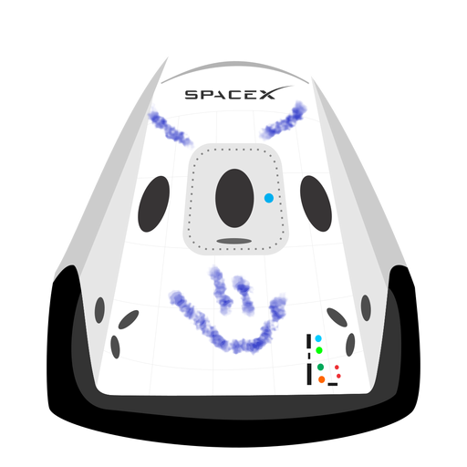

HyperBlog
Tu blog
de confianza
Este es el titulo atractivo e interesante del post
Este es el párrafo de inicio donde vamos a explicar las cosas increíbles que se pueden hacer con ramas

Los blogs son la mejor manera de compartir información y tus ideas. Mucho más que ir a conferencias o salir en YouTube. Excepto si eres un rockstar. pero estadísticamente no lo eres... por ahora.
SUSCRIBITE Y DALE LIKE